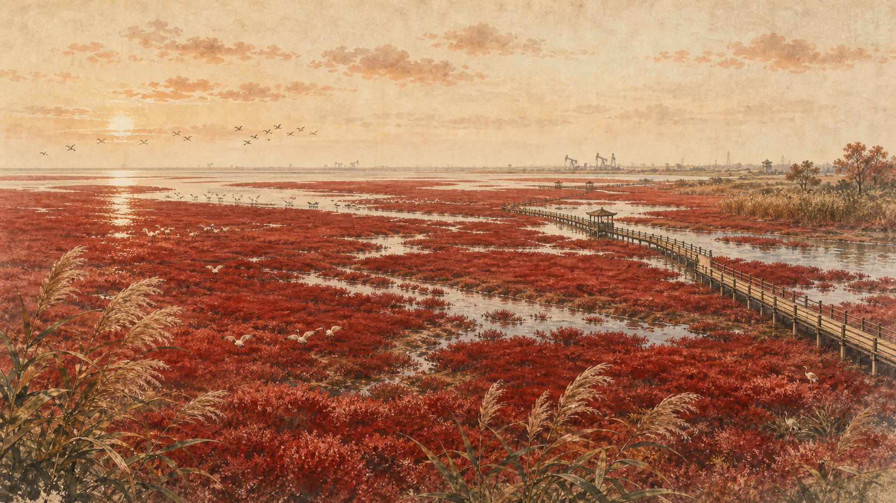
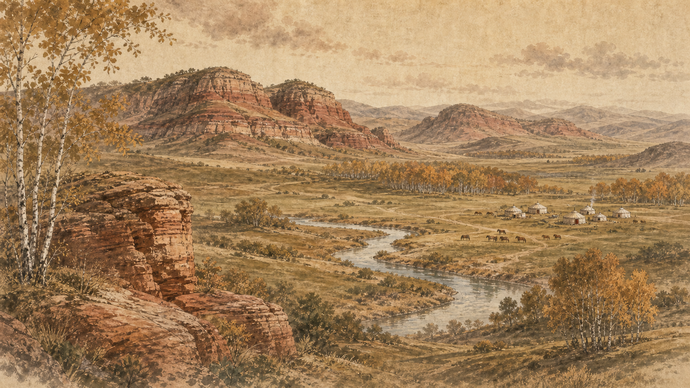
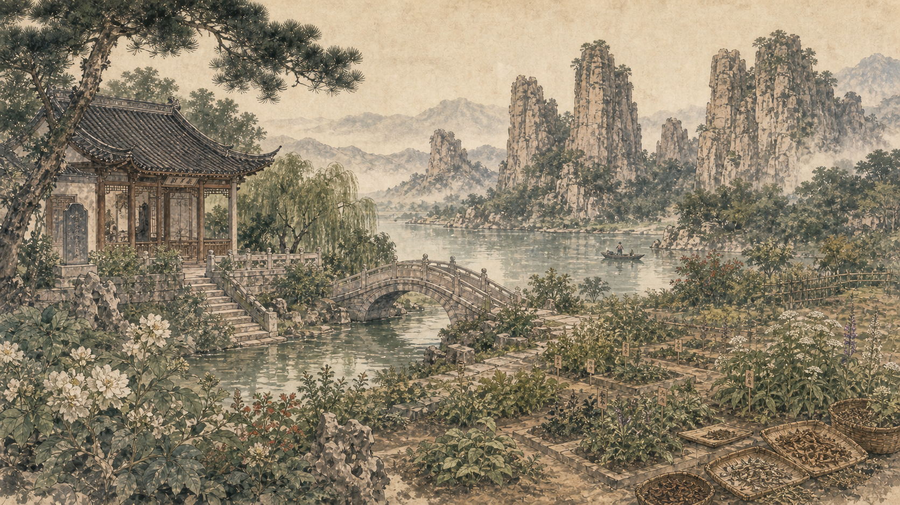
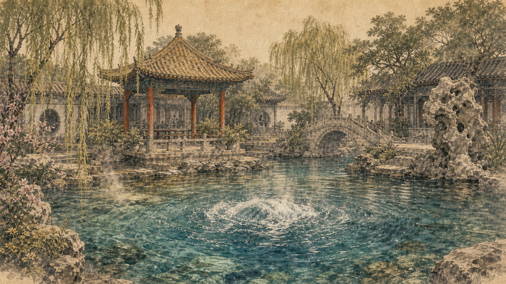
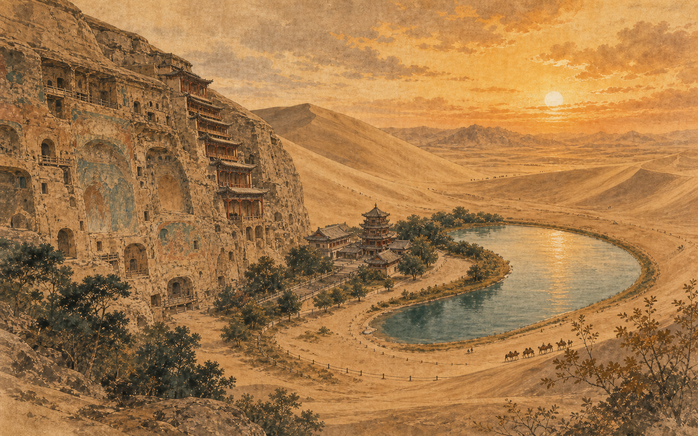

旅の足跡
訪れた都市 44 都市
フフホトから出発し、山河、古都、夜市、列車の窓の光を足跡に残しています。最新章は、東京から関西へと続く15日間の日本旅行記です。
2026年02月


2025年08月





2025年05月


2025年02月




2025年01月

2024年08月


追加都市 / 日付未入力






一致する都市がありません。
旅の足跡
フフホトから出発し、山河、古都、夜市、列車の窓の光を足跡に残しています。最新章は、東京から関西へと続く15日間の日本旅行記です。





一致する都市がありません。